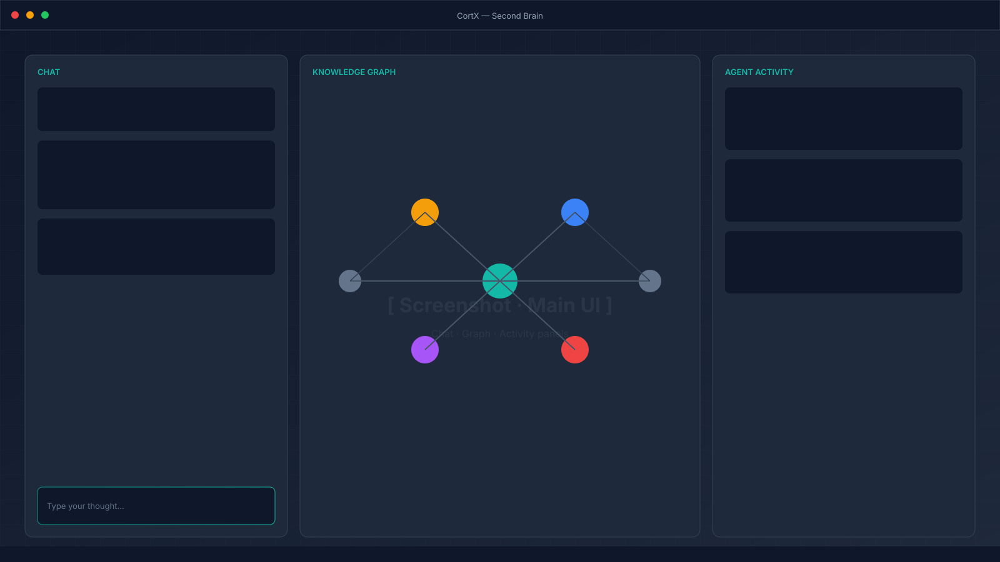
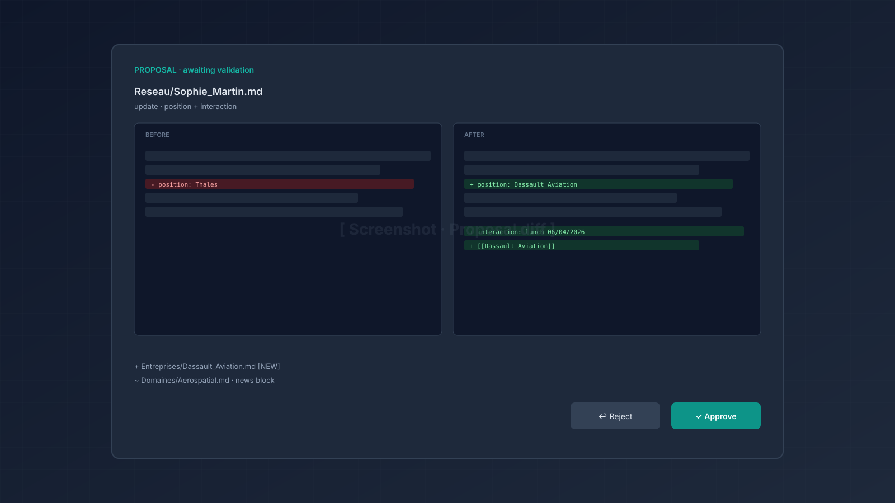
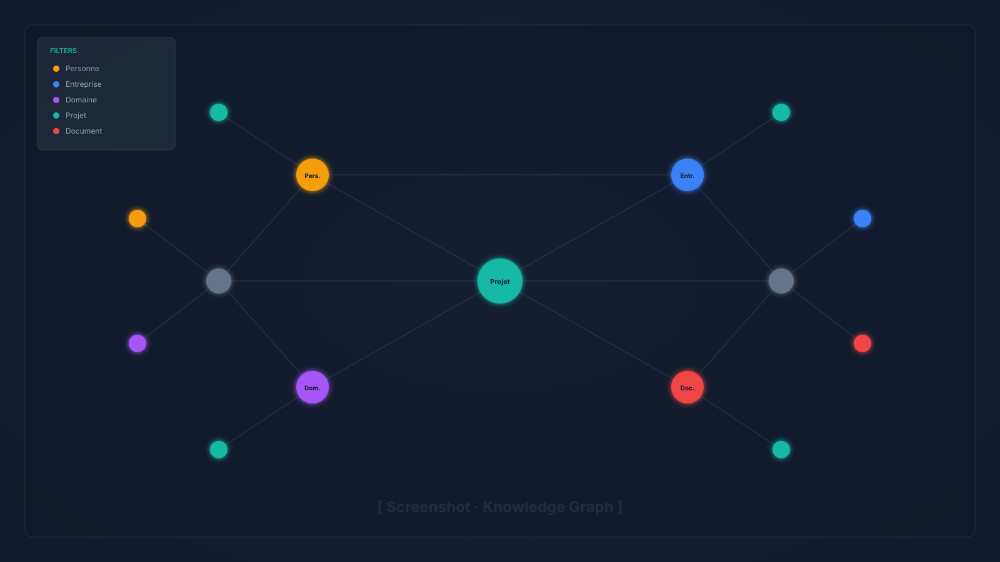
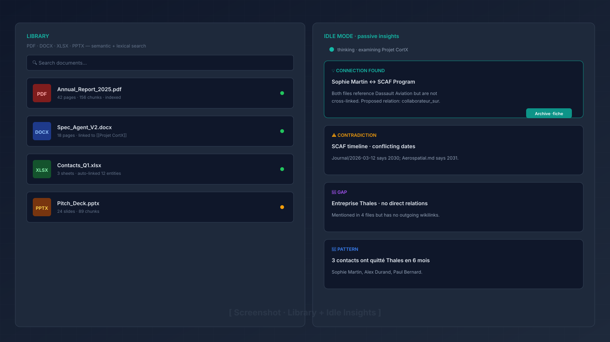

Structuring Agent
Type raw text — the agent identifies entities (people, companies, concepts), creates or updates Markdown files, and adds cross-links automatically.
An AI-powered second brain that writes your knowledge base for you. Drop a raw thought — CortX identifies entities, creates Markdown files, weaves wikilinks. Git commits everything automatically.

The #1 barrier to a real "second brain" isn't the tool. It's the cognitive overhead of maintenance: naming, tagging, linking, filing.
CortX brings that cost to zero. You type raw text. The agent does the rest.
An agent that writes your files — not a chatbot that just talks.
Type raw text — the agent identifies entities (people, companies, concepts), creates or updates Markdown files, and adds cross-links automatically.
Real-time Cytoscape · cose-bilkent graph. Nodes colored by type (person, company, domain, project) with filtering, search, and double-click exploration.
FTS5 full-text + semantic embeddings. The agent retrieves relevant files before every response, with multi-hop expansion across wikilinks.
Import PDF, DOCX, XLSX, PPTX. Text extracted via docling, chunked, vectorized. Auto-linked to entities via [[wikilinks]].
In the background, the agent explores your knowledge base: hidden connections, contradictions, gaps, recurring patterns. Archive any insight as a note in one click.
/wiki imports a Wikipedia article, /internet fetches a URL or runs a DuckDuckGo search — all injected into the agent's context window.
Every accepted action = a Git commit. Full history, one-click undo (git revert), and a built-in audit log for every agent action.
Every action is previewable (before/after diff) and requires your explicit approval. Nothing is ever written to disk without your sign-off.
Full interface in English and French. Web search and Wikipedia fetch run in the active language with automatic English fallback.
The agent understands context, decomposes entities, proposes changes. You approve.
"Coffee with Sarah Kim. She left OpenAI to co-found Redline, an AI safety startup. Mentioned that Anthropic's Constitutional AI V2 paper drops Q3 — apparently it addresses the scalable oversight problem directly."
From a single raw note, the agent identifies 3 people, 3 companies, 1 domain, modifies 2 files, creates 1 new file, and maintains all cross-links — in under 3 seconds.



Plug in a local LLM for full privacy, or an API key for maximum reasoning power.
Ollama · llama.cpp · LM Studio. Zero data leaves your machine. No account, no subscription.
Claude (Anthropic) or OpenAI-compatible. Best reasoning quality for complex knowledge graphs.
| Mem.ai | Khoj | Obsidian + AI | CortX | |
|---|---|---|---|---|
| Agent writes the files | ✕ | ✕ | ✕ | ✓ |
| Local Markdown files | ✕ | ✕ | ✓ | ✓ |
| 100% local LLM possible | ✕ | ✓ | ✕ | ✓ |
| Knowledge graph built-in | ✕ | ✕ | ✓ (plugin) | ✓ |
| Propose-then-execute | ✕ | ✕ | ✕ | ✓ |
| Git versioning + undo | ✕ | ✕ | ✕ | ✓ |
Node.js 20+ · Git · a local or cloud LLM
# clone
git clone https://github.com/gcorman/CortX.git && cd CortX
# install
npm install
# run
npm run dev # dev mode with HMR
npm run dist # build Windows installer (NSIS)Pick where Markdown files live (default: ~/Documents/CortX-Base/).
Ollama / llama.cpp (local, no key) or Anthropic / OpenAI (API key).
Drop raw text. The agent proposes. You approve. Git commits.
better-sqlite3 fails to load after install, run npm run rebuild to recompile native bindings against your Electron version.
You speak. The agent structures. Git versions. Everything stays on your machine.